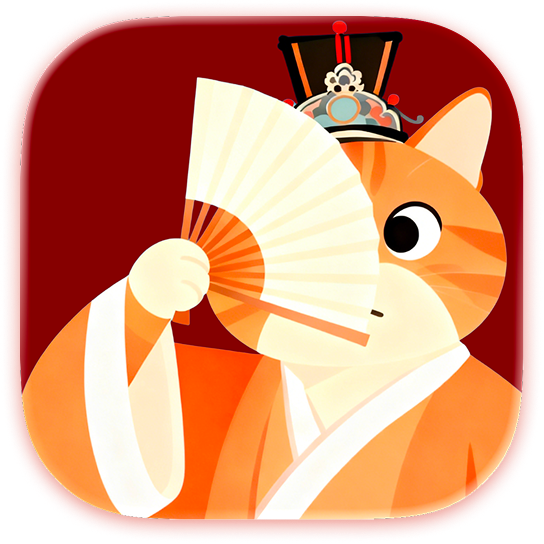
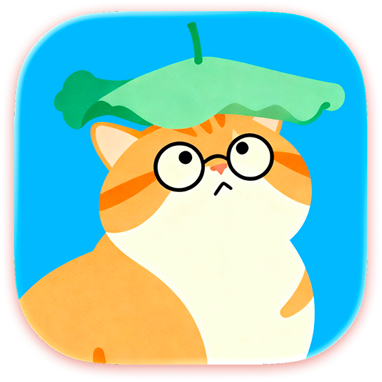
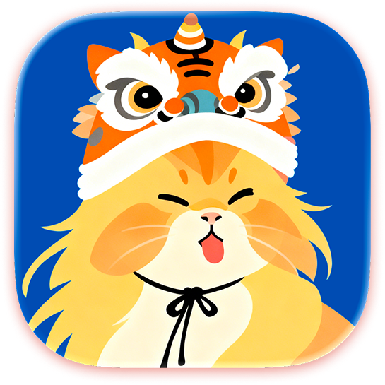
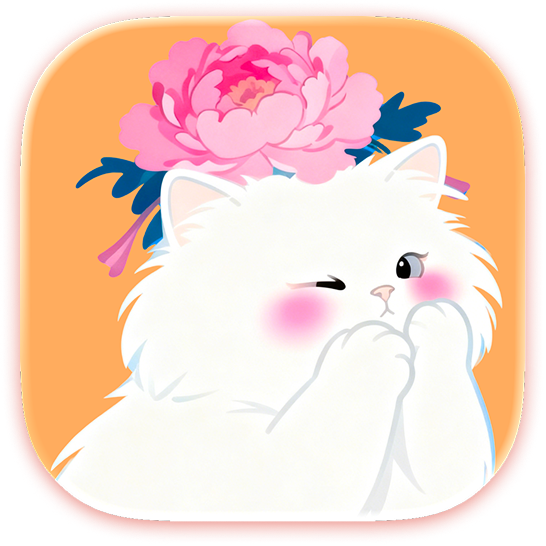
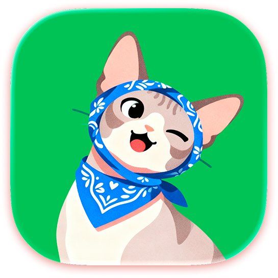
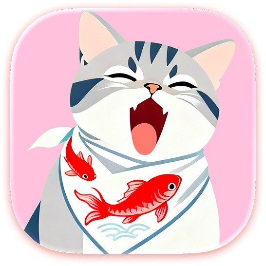
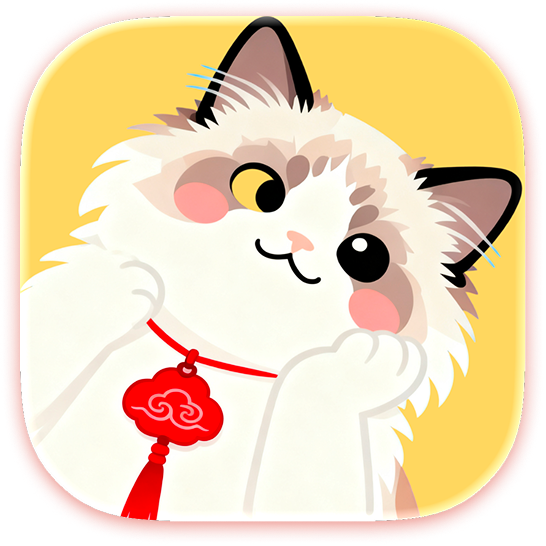
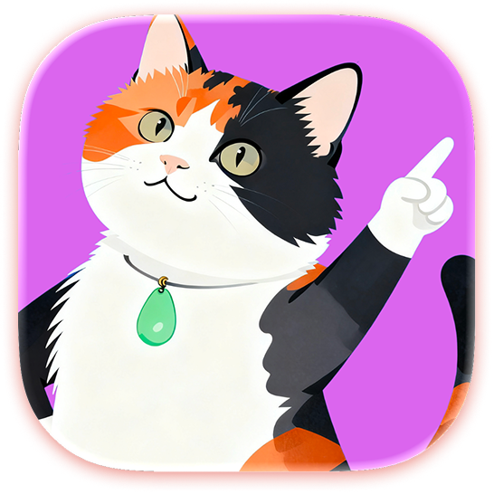

Fokus handler ikke om at nå mere— det handler om at beskytte det, der virkelig tæller.
Hver session, et roligt ritual
Mindre hastværk, mere nærvær — hver session er et stille ritual, ikke et kapløb mod uret.
Spor tid, hold fokus
Et minimalistisk, orientalsk-inspireret fokusrum designet til at reducere visuel støj — på iPhone og iPad. Levende zen-scener — gårdhave, bambusskygger, sømåne — og beroligende lyde som spinden, tempelstemning og koto præger hver session.








?
Mød dine kompagnoner
Otte katte og Plumeo tranen — hver med sin historie, personlighed og tilbehør. En lille følgesvend er med dig i hver fokussession: en rolig tilstedeværelse, aldrig en distraktion.
🔥+0
❤️+0
Beløn dine gode vaner
Fuldfør fokussessioner for at tjene energipoint. Hvis du afbryder sessionen før tid, reagerer din lille følgesvend blidt — og opmuntrer dig til at prøve igen. Point låser katte, temaer og lyde op; Plumeo tranen kommer via Partner-butikken.
Lås smukke badges op
Tre badge-samlinger — hver fortæller en historie om dit fokus:
FokustræningHver træningssession tæller.
Dagligt følgeskabStabil tilstedeværelse, dag efter dag.
Indsamlede øjeblikkeFokustid samlet over lang tid.
Fra første skridt til langsigtet vækst — badges visualiserer din vej.
Slap af med beroligende lyde
Indløs energipoint i Point-butikken for ambientmusik og zen-scenetemaer. Kombiner blid bevægelse med lydlandskaber, der hjælper dig i dybt fokus.
Bloker eksterne distraktioner
Afslappet tilstandSkift frit mellem apps uden straf.
Udfordret tilstandAppskift reducerer optjente energipoint og holder dig opmærksom på distraktioner.
Hvidliste-tilstandKun valgte apps forbliver tilgængelige via Skærmtid. (Kræver iOS 16 eller nyere og Plus-abonnement)
Fokusstatistik og tidslinje
Se samlet fokustid og sessionsantal, udforsk daglige/ugentlige/månedlige tendenser, forstå opgavefordeling og peak-fokustimer, og gennemgå sessioner med noter og refleksioner.
Liveaktivitet og Dynamic Island
Dynamic Island og Liveaktivitet holder din timer på låseskærmen, mens du fokuserer — synlig med et blik, uden at åbne appen.
9:41
7-dages fokustrend (varighed)
M
T
O
T
F
L
S
I dag
2h 15m
4×
Denne uge
Varighed8h 40m
Sessioner12×
Pr. dag~1h 14m
Calendar
Photos
PurrrrrFocus
Mail
Widgets på hjemmeskærmen
Fastgør I dag, din ugeoversigt eller en 7-dages trend — uden at åbne appen. Widgets følger dit in-app-tema og forbliver nyttige på hjemmeskærmen mellem sessioner.
OfflineIngen sky krævet
Ingen kontoStart med det samme
Ingen sporingPrivat by design
Ingen reklamerUden distraktion
Privatliv først
PurrrrrFocus kører fuldt offline — ingen konto, ingen sporing og ingen reklamer. Dine fokussessioner, noter og statistik forlader aldrig din iPhone, medmindre du vælger at eksportere dem.
Hvorfor Louis lavede PurrrrrFocus — og hvad folk siger efter et par sessioner.
Et brev fra skaberen
“Jeg byggede denne app for at overleve den 'notifikationsstorm', der druknede mit eget fokus.”
I min tidligere SaaS-karriere var jeg fanget i en endeløs cyklus af over 100 gruppechats og nådesløse AI-bots. Jeg følte min evne til at tænke dybt forsvinde dag for dag. PurrrrrFocus blev født ud af min egen kamp for at genvinde min hjerne fra den digitale støj.
Hvad vores brugere siger
Holder ved
PurrrrrFocus er helt fantastisk! Det er perfekt til både børnene og mig—nuttet og praktisk, hjælper os med at gøre lidt fremskridt hver dag. Det er fantastisk til at forbedre fokus, og jeg vil fortsætte med at bruge det langsigtet for at blive en bedre version af mig selv.
Kompagnoner
Sød! Elsker den følelsesmæssige forbindelse med kattekompagnonerne!
Rolige scener
Åh gud, det her er så sødt! Jeg elsker de kinesisk-inspirerede temaer.
Find din fokusstil
Forskellige mennesker fokuserer forskelligt. Udforsk guiden der matcher dit mål.
Er PurrrrrFocus en Pomodoro-timer — og kan jeg bruge den til studie og arbejde?
Ja. PurrrrrFocus understøtter Pomodoro-intervaller og åbne fokussessioner i et roligt, zen-inspireret rum — på iPhone og iPad. Velegnet til studie, dybt arbejde og daglige rutiner uden rod eller pres.
Er PurrrrrFocus gratis — og hvad indeholder Plus?
PurrrrrFocus kan downloades gratis uden reklamer. Du kan bruge kerne-Pomodoro- og optællingstimeren, Afslappet fokustilstand, grundlæggende sessionsstatistik, widgets på hjemmeskærmen, Liveaktivitet og fuld offline privatliv på din enhed.
Plus (valgfrit) tilføjer Udfordret- og hvidliste-fokustilstande, brugerdefinerede opgavetyper, avanceret statistik, dataeksport, eksklusive app-ikoner, energipoint-ikonstile og udvalgte Plus-lyde.
Nogle kompagnoner, temaer og musik låses op over tid via energipoint eller valgfrie køb i appen — de er ikke alle inkluderet fra dag ét. Se Support for planer i din region.
Virker den på iPhone og iPad?
Ja. PurrrrrFocus er bygget til både iPhone og iPad og kræver iOS 15.0 eller nyere. Dine sessioner, statistik og widgets forbliver på din enhed.
Er mine fokusdata private og gemt offline?
Ja. PurrrrrFocus kører fuldt offline — ingen konto, ingen sporing og ingen reklamer. Din fokushistorik forbliver på din enhed, medmindre du vælger at eksportere den (Plus).
Er den egnet til ADHD?
Mange med ADHD bruger den for det rolige layout, fleksible timere og blide kompagnon-feedback — struktur uden overvældelse. Se vores ADHD-fokusguide for praktiske tips.
Download PurrrrrFocus
Gør dagligt fokus til et roligere, mere meningsfuldt ritual.